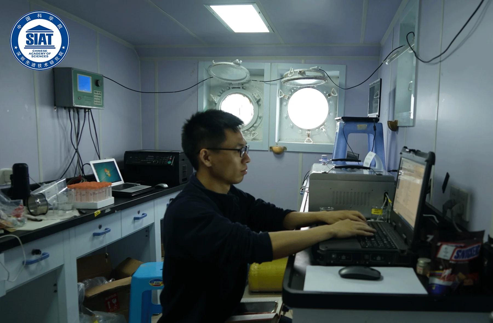
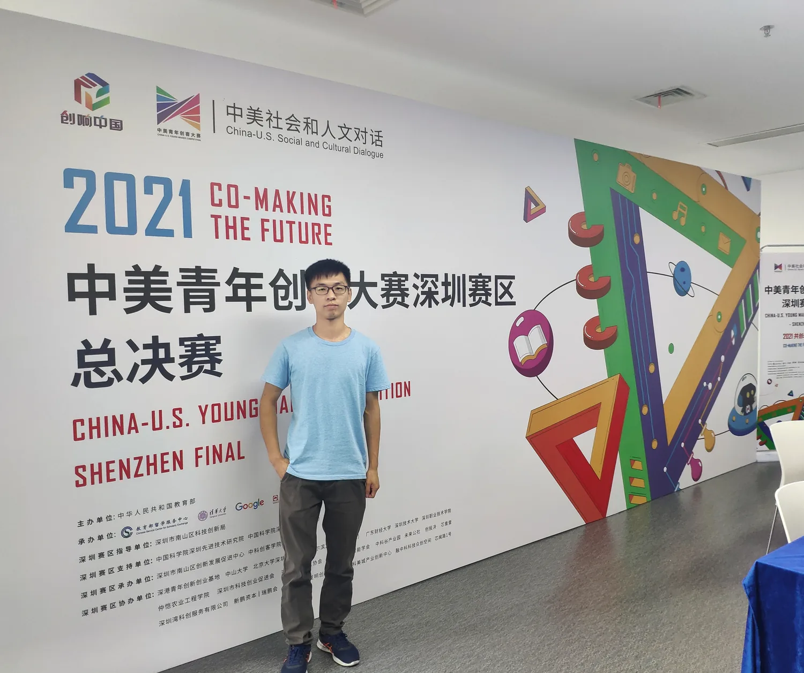
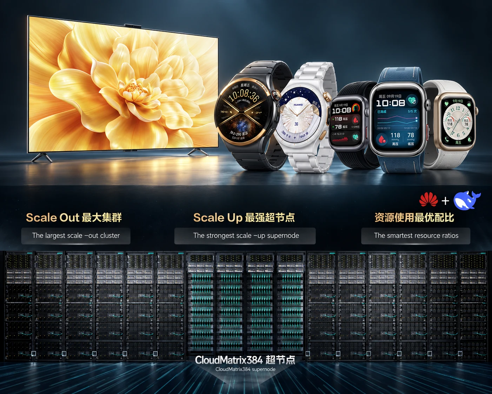
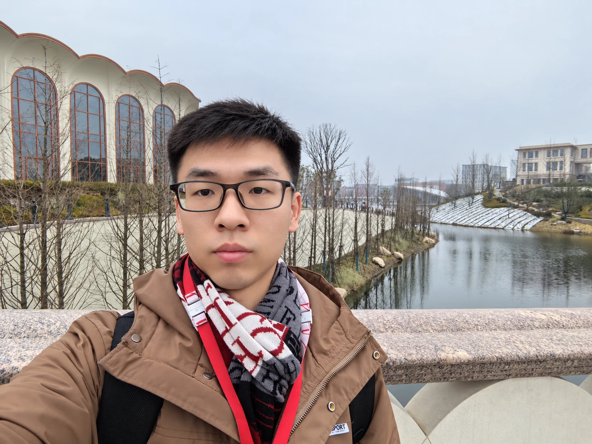
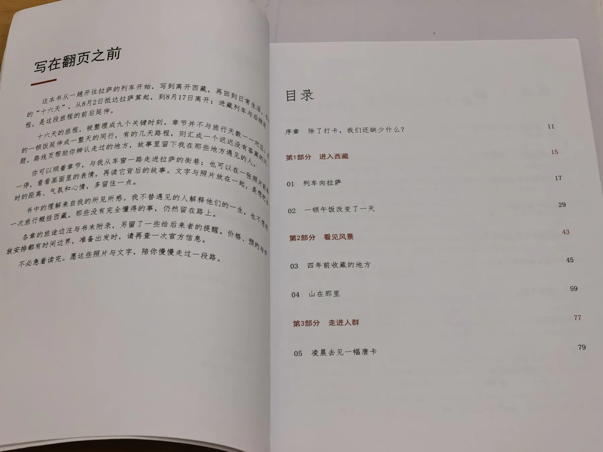

在科研里，把陌生问题做深
在中国科学院深圳先进技术研究院，我参与走航式海洋浮游植物智能分析仪研制。最耗时的环节是数据集：样本获取昂贵、类别复杂，算法再好也绕不开数据基础。

我做了什么
与厦门大学、自然资源部第三海洋研究所协作，开发采集控制程序，把相机、激光、泵阀和预处理串成自动化链路，加快 32 类、40万+图像的构建。
留下的能力
面对陌生硬件时，先拆系统、补知识、做联调。研究训练了我把问题做深，也让我懂得算法必须进入完整系统。
JOURNEY · 2019—NOW
七年里，我先后参与科研仪器、消费终端和大模型工程。工作对象不断变化，采用的方法始终清晰：定义问题，建立数据与验证标准，再把算法推进到可运行、可交付的系统。
在中国科学院深圳先进技术研究院，我参与走航式海洋浮游植物智能分析仪研制。最耗时的环节是数据集：样本获取昂贵、类别复杂，算法再好也绕不开数据基础。

与厦门大学、自然资源部第三海洋研究所协作，开发采集控制程序，把相机、激光、泵阀和预处理串成自动化链路，加快 32 类、40万+图像的构建。
面对陌生硬件时，先拆系统、补知识、做联调。研究训练了我把问题做深，也让我懂得算法必须进入完整系统。
我组建“蓝色海岸线”团队，主导便携式流式细胞计数器原型开发，并作为主要答辩者参加中美青年创客大赛。深圳特等奖与全国二等奖，给了我一次重要的自信确认。

技术先进只是起点。一个作品还要说清用户、场景、成本与商业价值，才能真正走出实验室。
它让我第一次明确感到，自己有能力组织团队、完成原型，也能把复杂技术讲给评委和非专业听众。
我选择进入产业一线，希望学习产品实践与工程落地，也想亲历一个想法如何经过数据、算法、评测、协作和交付，最后成为消费者真正使用的功能。

人体感知、卡路里估计与运动心血管风险评估进入智慧屏、Watch、手环和 Fit 等多款产品。
真实产品会把性能、功耗、鲁棒性、用户体验和交付节奏同时摆在桌面上。它们共同决定算法有没有价值。
大模型把问题的尺度再次放大。我参与 DeepSeek V3 / R1 在昇腾 NPU 集群与 CloudMatrix 384 上的部署和推理优化，工作重心转向算子、性能与系统协同。

参与 NPU 侧性能优化、FA 算子改进与算子级仿真能力建设，为部署决策提供依据。
技术浪潮越快，越需要终身学习、保持谦逊，也要有主动争取和持续向前的心气。
离开成熟组织以后，我开始独立探索。生活不是只有一条既定轨道，我想用作品检验方向：先写完一本旅行书，再把重心放到 AI 主题写作和软硬件原型。

人生的意义很大一部分来自创造。一个能被看见、使用和讨论的作品，会反过来塑造创作者。
到 2026 年底，争取完成 1—2 本 AI 主题书籍和一个 AI+硬件原型，让下一阶段由连续作品定义。